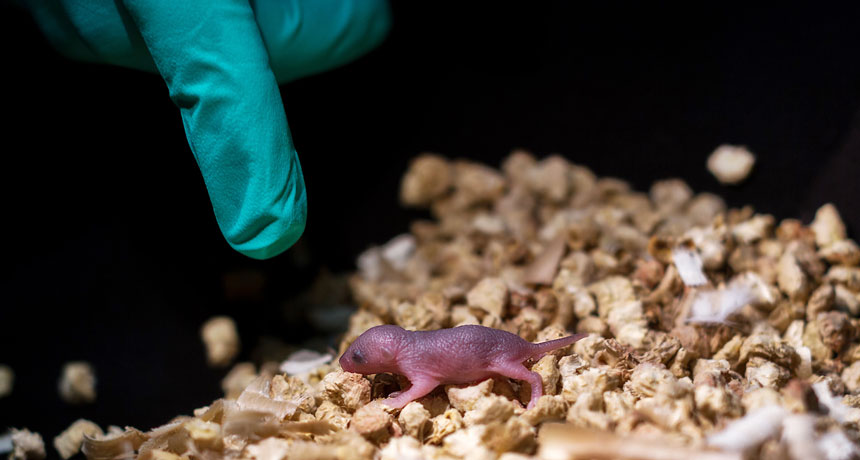
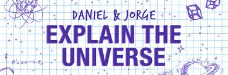
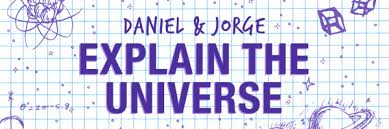

Biology
MY TWO DADS This mouse pup has two biological fathers and no mother. The mouse was produced in a lab from stem cells from two male mice. It did not survive to adulthood.
.jpg)
.jpg)
.jpg) 

French: “Un roman à l’eau de rose”
Romanian: “Ai carte, ai parte”
English: “To crack a book”
《Bookworm》
MY TWO DADS This mouse pup has two biological fathers and no mother. The mouse was produced in a lab from stem cells from two male mice. It did not survive to adulthood.
THERAPY WIN The discovery of two immune system regulators and their role in cancer has led to a new way to provide therapy for patients — and has garnered the Nobel Prize in physiology or medicine for James Allison (left) and Tasuku Honjo (right).
NOBEL PRIZE The work of the three new laureates is used in everything from drugs to biofuels BY TINA HESMAN SAEY 7:37AM, OCTOBER 3, 2018
ELECTRONS GO FRACTAL A fractal called a Sierpinski triangle (right) has been fashioned in the quantum realm (left), shown in an image indicating the density of electrons on the surface of copper.
ORIGIN STORY The frigid and radiation-rich conditions in stellar nurseries like the Eagle Nebula, shown here in an image from the European Space Agency’s Herschel Space Telescope, could have created the sugar that makes up DNA.
AVATAR SEE AVATAR DO In a new computer program, virtual characters learned full-body motions, like cartwheels, by watching YouTube videos..